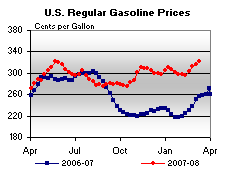
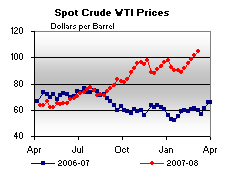

Released on March 12, 2008
(Next Release on March 19, 2008)
$4 per gallon?
When the weather forecast calls for a partly sunny day, will it be sunny where you are? Or, if the weather forecast calls for a “chance of scattered showers,” does that mean it will be raining at the park when you’re planning to have a picnic? While it may be interesting to know what the overall weather might be, what we’re really interested in is what the weather will be for us at some important time of the day. Well, weather forecasts are not that different from retail gasoline price forecasts. Many recent inquiries have asked about the prospects for $4 per gallon gasoline, but what they are really interested in is if they will be paying $4 per gallon at their gas station. In EIA’s March Short-Term Energy Outlook (STEO), the U.S. monthly average retail regular gasoline price is projected to peak near $3.50 per gallon in May and June. It is important to note, however, that even if the national average monthly gasoline price peaks near that level, it is possible that prices during part of a month, or in some region or at some stations, will cross the $4 per gallon threshold. There are several reasons why this may occur:
|
Because gasoline taxes and retail distribution costs are relatively stable, movements in gasoline prices are driven by the change in crude oil prices and wholesale margins. The STEO projection for the average West Texas Intermediate crude price over May and June is about $97 per barrel. All else equal, each additional dollar in the oil price adds about 2.4 cents to gasoline prices. Crude oil prices have been highly volatile in recent months. Oil prices significantly above the projected level would greatly increase the prospects for $4 per gallon gasoline in some parts of the country.
In terms of margins, local supply conditions will play a key role in determining prices at various regions and locations this spring and summer. There are some positive developments relative to last year in terms of the gasoline market itself. Gasoline inventories are currently well above the seasonal average, while demand is down, in part, due to the high prices. In addition, the expectation is that there may not be as many refinery outages this year as seen in the last two spring/summer seasons. These could be mitigating factors for gasoline prices this spring/summer. Nevertheless, given the forecast for the U.S. average retail gasoline price over the next few months, there is a chance that some people might have $4 per gallon gasoline rain on their picnic.
Residential Heating Oil Prices Jump Even Higher
Residential heating oil prices leaped higher for the fourth consecutive week during the period ending March 10, 2008, the 23rd week of the survey this season. The average residential heating oil price set a record high once again with an increase of 12.8 cents last week to reach 367.8 cents per gallon, which was an increase of 118.2 cents from the 23rd reporting period last year ending March 5, 2007. Wholesale heating oil prices rose 15.4 cents to reach 310.2 cents per gallon, which was an increase of 121.7 cents compared to last year.
The average residential propane price reversed its course minutely, decreasing 0.1 cent to reach of 260.3 cents per gallon. This was an increase of 57.4 cents compared to the 202.9 cents per gallon average for the same period last year. Wholesale propane prices fell by 9.4 cents, from 169.1 to 159.7 cents per gallon. This was an increase of 52.0 cents from the March 5, 2007 price of 107.7 cents per gallon.
U.S. Gasoline Highest Price in History; Highway Diesel Prices Continue at Record Highs
Gasoline prices rose in all regions of the country, with the U.S. average retail price reaching its highest point in history, 322.5 cents per gallon. That was an increase of 6.3 cents from the previous week and 66.6 cents more than the price a year ago. Prices on the East Coast increased by 2.6 cents to 319.4 cents per gallon, 66.1 cents per gallon more than the price last year. Once again, the average price in the Lower Atlantic was at an all-time high increasing by 3.1 cents, to 320.8 cents per gallon. Unlike last week when the Midwest was the only region of the country where the average price was unchanged, this week the price there surged by 11.1 cents to 319.1 cents per gallon, up by 70.4 cents per gallon from a year ago. The Gulf Coast average gasoline price shot up by 4.3 cents to 313.1 cents per gallon, the highest price in history for the region and 3.9 cents per gallon above the previous record reached May 21, 2007. Although the price in the Rocky Mountains increased by 2.1 cents, to 310.9 cents per gallon, the average price there was the lowest of any region. The average price on the West Coast remained the highest of any region in the country, jumping 7.1 cents to a reach a new all-time high for the second week in a row. The average price of 345.7 cents per gallon was 53.7 cents higher than a year ago. In California, the average price for regular grade jumped by 7.8 cents to 353.7 cents per gallon. While this was just 46.9 cents above the price a year ago, it surpassed the previous all-time high price set May 7, 2007 by 7.6 cents.
For the fourth week in a row, the U.S. average retail diesel price continued its rapid rise surging up by 16.1 cents to 381.9 cents per gallon, and reaching an all-time high for the third consecutive week. The price was 113.4 cents above the price a year ago. On a regional basis, prices remained at all-time high levels in all regions of the country. On the East Coast, the average price shot up 17.0 cents to 387.0 cents per gallon, 120.1 cents per gallon above last year. In the Midwest, the price jumped by 14.5 cents to 378.4 cents per gallon, up by 111.1 cents from a year ago. The price in the Gulf Coast surged, shooting up by 18.9, to reach 379.8 cents per gallon, the largest increase of any region. Once again, the average price in the Rocky Mountains remained the lowest of any region. Nonetheless, the price there jumped up to 373.2 cents per gallon, an increase of 15.9 cents, 99.6 cents per gallon above last year. On the West Coast, the average price shot up by 14.9 cents to 388.5 cents per gallon, 107.4 cents above the price a year ago. The average price in California grew by 15.2 cents to 395.5 cents per gallon, 105.6 cents higher than last year.
Propane Inventories Moderately Lower
Last week’s draw on total propane inventories slowed moderately from the sharp declines reported over the last several weeks, with primary supplies of propane moving down by 1.3 million barrels to settle at an estimated 27.6 million barrels as of March 7, 2008. Midwest inventories fell by 0.6 million barrels last week, followed by a 0.5 million-barrel decline in East Coast inventories. The Gulf Coast reported a modest 0.2 million-barrel decline while the combined Rocky Mountain/West Coast region was virtually unchanged. Propylene non-fuel use inventories rose last week, up 0.1 million barrels, accounting for a much larger 9.0 percent of total propane/propylene inventories compared with the prior week’s 8.1 percent share.
Text from the previous editions of “This Week In Petroleum” is now accessible through a link at the top right-hand corner of this page.
| Retail Prices (Cents Per Gallon) | |||||||
|  | |||||||
| Retail Data | Changes From | Retail Data | Changes From | ||||
| 03/10/08 | Week | Year | 03/10/08 | Week | Year | ||
| Gasoline | 322.5 | Heating Oil | 367.8 | ||||
| Diesel Fuel | 381.9 | Propane | 260.3 | ||||
| Spot Prices (Cents Per Gallon) | |||||||||||||||||||||||||||||||||||||||
|  | |||||||||||||||||||||||||||||||||||||||
 |
|||||||||||||||||||||||||||||||||||||||
|
|||||||||||||||||||||||||||||||||||||||
| Stocks (Million Barrels) | |||||||
 |
|||||||
| Stocks Data | Changes From | Stocks Data | Changes From | ||||
| 03/07/08 | Week | Year | 03/07/08 | Week | Year | ||
| Crude Oil | 311.6 | Distillate | 116.4 | ||||
| Gasoline | 236.0 | Propane | 27.609 | ||||